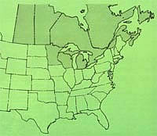
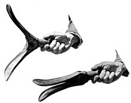
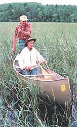
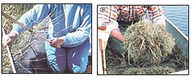

When nights turn chill, and days grow wee, this Gopher State couple gets wild rice . . . free!
If you enjoy the nutty goodness and subtle flavor of wild rice (and most folks do!), you probably already know that the glamour grain is one of the most expensive foodstuffs around . . . often selling for as much as $12 per pound! However, top-quality wild rice can be yours for a tiny fraction of that amount. In fact, my wife Lil and I collect our own supply each fall . . . by prowling the lakes and waterways near our north woods home in search of the coveted wild edible.
Called manomin by our Chippewa Indian neighbors, and Zizania aquatica by botanists (who classify it as a grass, rather than a true rice), this highly nutritious cereal grain is still being harvested in essentially the same manner as it was by native Americans centuries ago . . . that is, by knocking it off the stalks and into a canoe, using a pair of wooden sticks. Indeed, many states have laws designed to see that rice gathering remains an unmechanized activity. And while it's true that the regulations contribute to the high price of the delicacy, it seems likely that without such restrictions commercial interests would soon overharvest the grain . . . perhaps to the point of extinction.
This native of shallow, mud-bottomed water could once be found in an area ranging from the plains states to the Atlantic, and from southern Canada to the Gulf of Mexico. Today, however, although a few scattered stands have survived the ravages of drainage, dredging, and pollution along the Mississippi River and the Gulf and Atlantic shores, the main harvest occurs in the lake country of the "rice bowl" states of Michigan, Wisconsin, and Minnesota . . . and in the Canadian provinces from Saskatchewan eastward.
In our area - the heart of the Superior National Forest near Ely, Minnesota - there are more than 1,500 sizable rice beds and hundreds of smaller ones. But don't go into a gastronomic frenzy just yet. Simply knowing that this aquatic cereal exists in a given region won't guarantee that you'll be able to find and harvest the sought-after annual.
MY HEART KNOWS WHERE THE WILD RICE GROWS
Veteran ricers tend to be as closemouthed about their "private" patches as prospectors are about beds of gold-bearing gravel ... and for good reason. What with the high prices commanded by this uncultivated delicacy, commercial operators have been known to move in on a find and harvest the major part of the stand in a matter of days . . . or hours!
During the final days of August and into early September, when the nights are cool and the days growing short, wild rice begins to ripen rapidly. An entire patch of grain isn't likely to reach maturation all at once, however, so a harvesting team can go over the same area at intervals a few days apart and expect to gather a good supply on each trip.
And just how does one find a stand of wild rice? Well, some experienced ricers just seem to "know in their hearts" where to look for the delectable treat . . . but, for the rest of us, the best way to locate a patch is to search out the golden stalks before the grain begins to ripen. In most states within the tasty grass's range, the department of agriculture will provide reasonably accurate - although admittedly general - information about ricing areas . . . but the whereabouts of the best stands in any particular year probably won't be part of the package. Lil and I get occasional tips from conservation officers and fisherfolk, too, but our most rewarding method (in more ways than one!) of "prospecting" is simply to spot and make note of the rice while enjoying August canoe excursions.
Throughout the month before the harvest begins, you see, the stalks protrude well above the surface of the water in likely ponds .. . in the shallow, mud-bottomed bays of the larger lakes . . . along meandering creeks . . . and in the mucky estuaries where streams empty into larger bodies of water.
The root systems are anchored in mud, which will be anywhere from a few inches to as much as two feet beneath the water's surface, and the stalks rise from two to five feet in height. The grain is clustered at the top of the main stem. When completely filled out and ripe, the seeds range from a half-inch to more than an inch in length, varying in color from light green to brown.
Over the years we've cataloged some two dozen good harvesting grounds, ranging from relatively small stands of approximately five acres, to giant granaries of more than a hundred.
Since the yield and quality of an area's crop may vary sharply from year to year, we simply canoe past a number of our favorite patches, mentally marking out those we think will produce the best and most abundant harvest.
RULES AND PREPARATIONS
Naturally, you must be sure you understand any pertinent state laws before going ricing, both for your own protection and for the longterm preservation of the crop. In Minnesota, for example, the Department of Natural Resources shares custody of the state's wild rice stands with the Indian Rice Committees. Of course, the native American organizations have jurisdiction over the beds located within reservation boundaries . . . which are some of the most productive in the state. However, there are thousands of fertile locations outside those preserves that are available, on an equal basis, to Indian and non-Indian alike.
The ricing season usually opens during the latter part of August, with gathering hours set between 9:00 a.m. and 3:00 p.m. (because the grain is easiest to remove from the stalk during the warmest part of the day). A rice harvesting license in our state costs $4.00, and is obtainable at most of the places that sell fishing permits.
Under Minnesota law, a canoe used when collecting the grain can be no more than 18 feet in length and 36 inches wide. And while it's all right to paddle the double-ender to the harvesting ground, it must be propelled through the stand with a push-pole . . . in order to avoid damaging the stalks.
Yet another rule requires that the pole be fitted with a forked lower end . . . which - in most cases - is actually a pair of hinged wings that fold against each other when the pole is pulled forward through the water, but fan out when forced against the mucky bottom, providing additional purchase. A lot of ricers buy commercially produced aluminum units called "duckbills", which are widely available in canoe shops.
Even the generally crude sticks used to knock rice off the stalks must meet certain legal requirements, being restricted to a length of not more than 30 inches and a weight of no more than a pound. This regulation serves to prevent ambitious commercial ricers from smashing their way through a patch with a pair of baseball bats . . . something that a few would surely do, were it not for the law. Most harvesters prefer to carve their own sticks, developing a design that performs well and fits their hands comfortably.
Just before the harvesting season actually begins, Lil and I check over our gear and give the interior of our canoe a good scrubbing with a bristle brush (after all, our harvest of grain will be collected on that floor). Then we remove the craft's center thwart and carrying yoke to provide a larger unobstructed area for the rice to fall into. The bow and stern thwarts are left in place, however, to maintain the boat's structural strength.
JUST A LITTLE WILD
One of the many wonderful attributes of wild rice is the fact that a little of it goes a long way: Three fourths of a cup of dry grain will fill an entire casserole when cooked. And while Lil has worked out a seemingly unlimited number of recipes based on the popular comestible, most of them begin with the same method of preparation.
To duplicate her process, use cold water to wash 3/4 cup of rice, twice, in a large saucepan . . . then cover the grain with about an inch of the liquid. If you intend to eat the rice with fish or fowl, add four chicken bouillon cubes . . . if you're aiming to serve the dish along with red meat, drop in four beef bouillon cubes instead. Next, bring the water in the pot to a boil, then cut back the heat and simmer the rice, covered. In about an hour the grain will be puffed up and tender, and ready to dish out as is . . . or to go into any of a variety of dishes such as muffins, bread, stuffing, casseroles, salads, puddings, and more!
"STALKING" YOUR PREY
As is the case with most jobs in life, there's definitely a preferred technique for efficient rice harvesting. Lil and I like to hit our first patch of the day just as the 9:00 a.m. opening hour strikes. As we drift down on the bed, I stand up - feet braced - in the space between the bow seat and the stem, facing the stern. My wife kneels on a boat cushion just behind the bow seat, also facing rearward.
Now with all of the passenger weight forward of the center point, and the poleman standing, you might think that our craft would be quite unstable . . . but after only a little practice we learned to maintain an easy balance while poling stern-first into the rice. In fact, in 16 years of harvesting, we haven't (knock on wood) dumped yet!
It's best to enter each rice patch carefully, first noting which way the stalks lean when blown by the wind. We've found that we get the best results by poling the canoe directly into the breeze on the first pass, then shifting over a few feet and coming straight downwind on the next. Any attempt to go crosswind through the bed of grain will usually result in your double-ender's being blown sideways over the stalks, forcing them down and putting most of the rice out of reach.
As the boat's bow parts the tall grasses, Lil reaches out over the starboard side of the canoe with one stick in her right hand and draws a sheaf of stalks over the gunwale. With the other stick, she knocks the kernels loose, hitting downward in the direction that the stems are leaning and almost sliding the top stick along the edge of the one that's holding the stalks down. Then my partner reverses the operation, pulling stalks over the port side and striking them with the righthand stick. My job is to keep our craft moving just fast enough to match the speed of her side-to-side motion. Of course, a lot of the rice misses the canoe and falls into the water . . . to serve as seed for next year's crop.
Wild rice kernels are tipped with beards - somewhat similar to those found on oats - so they tend to land in the boat heavy end down and fluff up . . . with the accumulation in the craft's bottom taking on the appearance of a greenish brown deep-pile carpet. But this "rug" often has an undercurrent of movement. There are usually ladybugs parading up and down the plants, and sometimes the stalks are infested with "rice worms" . . . the tiny white larvae of a moth that deposits its eggs on the stems during the summer. To any but the practiced eye, these minuscule creatures are nearly invisible . . . under most circumstances.
However, the first autumn that Lil and I riced together, we were caught in a sudden afternoon downpour that soaked the thick layer of grain in the bottom of our canoe. As I poled toward the shelter of some shoreline pines, my wife suddenly emitted a startled yelp and began shoving the harvest away from her knees. The tiny worms, forced up through the carpet of wild rice by the rising water in the belly of the boat, had climbed until they surfaced . . . turning the mat between Lil and the stern seat into a wriggling mass of sinuate white forms. Obviously, ricing is not for the overly squeamish.
"TAMING" YOUR HARVEST
When the legal gathering hours are over, we sweep the day's accumulation of grain out of the canoe and bag it. Closely woven sacks are best for this part of the operation, and we've found that old pillowcases work fine.. Once that's done, we head for home immediately, with the 50 to 80 pounds that constitutes our usual "take" packed securely and kept in the shade. (If left in the bags too long - several hours, say - green grain will begin to generate warmth, then start to mold and deteriorate.)
There are a number of ways to cure wild rice . . . but we simply spread the grain in a six-inch layer on our basement floor and turn it over twice a day until it's dry and ready. Other harvesters favor curing their share of nature's, bounty in the sun, while some ricers even claim that exposure to a little rainfall during the drying process improves the harvest's flavor. Everyone seems convinced that his or her method is the best . . . but - as far as we can see - they all do the job.
Like most grains, wild rice must be threshed before it can be prepared and eaten. My Chippewa friends tell me that the tribe formerly did this with their feet, donning moccasins made just for the purpose and treading on the crop while it lay in a shallow hole lined with moose hide. After the hulls were stamped loose, the grain was winnowed . . . a process which involved shaking it on a blanket or in a shallow basket and allowing the wind to carry the chaff away. A few folks still thresh their rice by hand, but most of us simply take the cured crop to one of the many commercial processors in the area. The pros will do the job in minutes for about 30 cents a pound . . . and, besides removing the hulls, many will clean and grade the harvest by machine, returning it divided into three lots: large grain, small grain, and broken pieces. (All are equally good to eat, but the bigger kernels do have the best appearance and are generally considered the choicest.)
Wild rice will often lose as much as 40% to 50% of its weight during processing, mostly in the form of water driven of by heat. Therefore, we usually wind up with about half the number of pounds we brought ashore in our canoe . . . though in good years, when the quality of the harvest is high, we might get as much as a 60% return.
As far as Lil and I can tell, the shelf life of wild rice is little short of unlimited . . . we actually know folks who've kept the delicacy in containers for up to ten years without deterioration or flavor loss. We don't manage to keep it that long, though! Out of our annual average of 100 pounds of finished grain, half goes into Christmas gift packages and the rest into our pantry. By the following fall the prior year's harvest is usually only a fond memory.
|
 ""DUCKBILL"": OPEN AND CLOSED Hinged wings on the push-pole provide for easy passage and leave the stalks undamaged. |
Lil mans the sticks while I push-pole. |
 Wooden sticks are used to knock the harvest loose. . . The day's haul. |
|
 |
 |
|